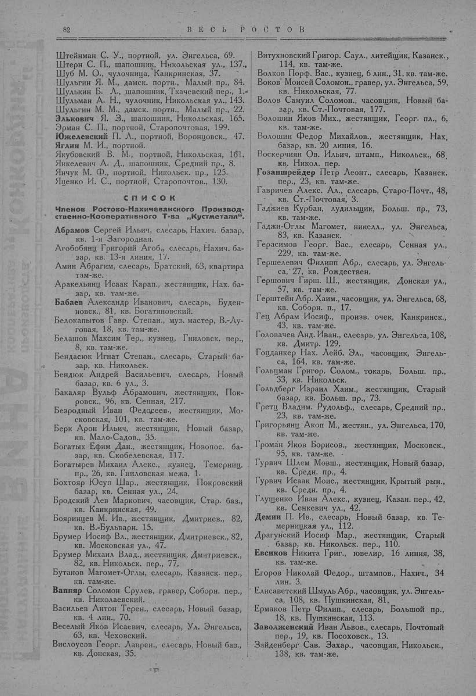

Лист источника 132
Скан

Распознанный текст
82 В Е С Ь Р О С Т О В
Штейнман С. У., портной, ул. Энгельса, 69.
Штерн С. П., шапошник, Никольская ул., 137.
Шуб М. О., чулочница, Канкринская, 37.
Шульгин Я. М., дамск. портн., Малый пр., 84.
Шулькин Б. Л., шапошник, Ткачевский пер., 1.
Шульман А. Н., чулочник, Никольская ул., 143.
Шульгин М. М., дамск. портн., Малый пр., 22.
Элькович Я. З., шапошник, Никольская, 165.
Эрман С. П., портной, Старопочтовая, 199.
Южелевский П. Л., портной, Воронцовск., 47.
Яглин М. И., портной.
Якубовский В. М., портной, Никольская, 161.
Янкелевич А. Д., шапошник, Средний пр., 8.
Янчук М. Ф., портной, Никольск. пр., 125.
Яценко И. С., портной, Старопочтов., 130.
СПИСОК
Членов Ростово-Нахичеванского Производ-
ственно-Кооперативного Т-ва „Кустметалл“.
Абрамов Сергей Ильич, слесарь, Нахич. базар,
кв. 1-я Загородная.
Агобобянц Григорий Агоб., слесарь, Нахич. ба-
зар, кв. 13-я линия, 17.
Амин Абрагим, слесарь, Братский, 63, квартира
там-же.
Аракельянц Исаак Карап., жестянщик, Нах. ба-
зар, кв. там-же.
Бабаев Александр Иванович, слесарь, Буден-
новск., 81, кв. Богатяновский.
Белокапытов Гавр. Степан., муз. мастер, В.-Лу-
говая, 18, кв. там-же.
Белашов Максим Тер., кузнец, Гниловск. пер.,
8, кв. там-же.
Бендасюк Игнат Степан., слесарь, Старый ба-
зар, кв. Никольск.
Бендюк Андрей Васильевич, слесарь, Новый
базар, кв. 6 ул., 3.
Бакаляр Вульф Абрамович, жестянщик, Пок-
ровск., 96, кв. Сенная, 217.
Безродный Иван Федосеев., жестянщик, Мо-
сковская, 101, кв. там-же.
Берк Арон Ильич, жестянщик, Новый базар,
кв. Мало-Садов., 35.
Богатых Ефим Дан., жестянщик, Новопос. ба-
зар, кв. Скобелевская, 117.
Богатырев Михаил Алекс., кузнец, Темерниц.
пр., 26, кв. Гниловская межа, 1.
Бохтояр Юсуп Шар., жестянщик, Покровский
базар, кв. Сенная ул., 24.
Бродский Лев Маркович, часовщик, Стар. баз.,
кв. Канкринская, 49.
Бояринцев М. Ив., жестянщик, Дмитриев., 82,
кв. В.-Бульварн. 15.
Брумер Иосиф Вл., жестянщик, Дмитриевск., 82,
кв. Московская ул., 47.
Брумер Михаил Влад., жестянщик, Дмитриевск.,
82, кв. Никольск. пер., 77.
Бутанов Магомет-Оглы, слесарь, Казанск. пер.,
кв. там-же.
Ваппяр Соломон Срулев, гравер, Соборн. пер.,
кв. Николаевский.
Васильев Антон Терен., слесарь, Новый базар,
кв. 4 лин., 70.
Веселый Яков Исаевич, слесарь, Ул. Энгельса,
63, кв. Чеховский.
Вислоусов Георг. Лаврен., слесарь, Новый баз.,
кв. Донская, 35.
Витухновский Григор. Саул., литейщик, Казанск.,
114, кв. там-же.
Волков Порф. Вас., кузнец, 6 лин., 31, кв. там-же.
Воков Моисей Соломон., гравер, ул. Энгельса, 59,
кв. Никольская, 77.
Волов Самуил Соломон., часовщик, Новый ба-
зар, кв. Ст.-Почтовая, 177.
Волошин Яков Мих., жестянщик, Георг. пл., 6,
кв. там-же.
Волошин Федор Михайлов., жестянщик, Нах.
базар, кв. 20 линия, 16.
Воскерчиян Ов. Ильич, штамп., Никольск., 68.
кв. Никол. пер.
Гозаншрейдер Петр Леонт., слесарь, Казанск.
пер., 23, кв. там-же.
Гавричев Алекс. Ал., слесарь, Старо-Почт., 48,
кв. Ст.-Почтовая, 3.
Гаджиев Курбан, лудильщик, Больш. пр., 73,
кв. там-же.
Гаджи-Оглы Магомет, никелл., ул. Энгельса,
83, кв. Казанск.
Герасимов Георг. Вас., слесарь, Сенная ул.,
229, кв. там-же.
Гершелевич Филипп Абр., слесарь, ул. Энгель-
са, 27, кв. Рождествен.
Гершович Гирш. Ш., жестянщик, Донская ул.,
57, кв. там-же.
Герштейн Абр. Хаим., часовщик, ул. Энгельса, 68,
кв. Соборн. п., 17.
Гец Абрам Иосиф., произв. очек, Канкринск.,
43, кв. там-же.
Головачев Анд. Иван., слесарь, ул. Энгельса, 108,
кв. Дмитр. 129.
Гоцданкер Нах. Лейб. Эл., часовщик, Энгель-
са, 164, кв. там-же.
Гольцман Григор. Солом., токарь, Больш. пр.,
33, кв. Никольск.
Гольдберг Израил Хаим., жестянщик, Старый
базар, кв. Больш. пр., 73.
Гретц Владим. Рудольф., слесарь, Средний пр.,
23, кв. там-же.
Григорьянц Акоп М., жестян., ул. Энгельса, 170,
кв. там-же.
Громан Яков Борисов., жестянщик, Московск.,
95, кв. там-же.
Гурвич Шлем Мовш., жестянщик, Новый базар,
кв. Средн. пр., 4.
Гурвич Исаак Моис., жестянщик, Крытый рын.,
кв. Средн. пр., 4.
Глущенко Иван Алекс., кузнец, Казан. пер., 42,
кв. Сенкевич ул., 42.
Демин П. Ив., слесарь, Новый базар, кв. Те-
мерницкая ул., 112.
Драгунский Иосиф Мар., жестянщик, Старый
базар, кв. Никольск. пер., 110.
Евсиков Никита Григ., ювелир, 16 линия, 38,
кв. там-же.
Егоров Николай Федор., штампов., Нахич., 34
лин. 3.
Елисаветский Шмуль Абр., часовщик, ул. Энгель-
са, 108, кв. Пушкинская, 81.
Ермаков Петр Филип., слесарь, Большой пр.,
18, кв. Пушкинская, 113.
Заволженский Иван Львов., слесарь, Почтовый
пер., 19, кв. Посоховск., 13.
Зайденберг Сав. Захар., часовщик, Никольск.,
138, кв. там-же.